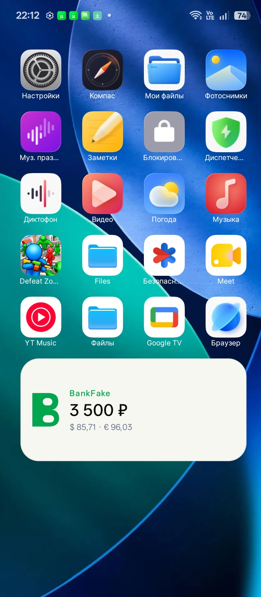

Кошелёк, карты, переводы, зарплата, копилки — и ИИ-ассистент на нейросети DeepSeek, который отвечает по твоим данным: «сколько я потратил за неделю?»
Карты «Мир», Visa и MasterCard с балансами, пополнением и операциями в одном месте.
Нейросеть DeepSeek внутри приложения: спроси про баланс, траты, карты или баллы — ответит по твоей истории.
Автоматические начисления, лимиты пополнений и честные правила экономики.
Копи баллы за операции, откладывай в копилки и следи за целями.
Графики расходов и доходов за период — видно, куда уходят виртуальные деньги.
Баланс всегда перед глазами: удобный виджет прямо на рабочем экране телефона.
Комфортный интерфейс в любое время суток.
Только интернет и уведомления. Никакого доступа к файлам, контактам и звонкам.

Нет. BankFake — игра-симулятор. Деньги здесь виртуальные, их нельзя вывести или оплатить реальные покупки.
Приложение отправляет твои вопросы на защищённый сервер, а нейросеть DeepSeek отвечает по данным твоего профиля: баланс, карты, история операций, баллы и лимиты.
Всё хранится на твоём устройстве. Приложение запрашивает только интернет и уведомления — больше ничего.
В RuStore — по кнопке выше. Версия 1.2, весит около 1 МБ.